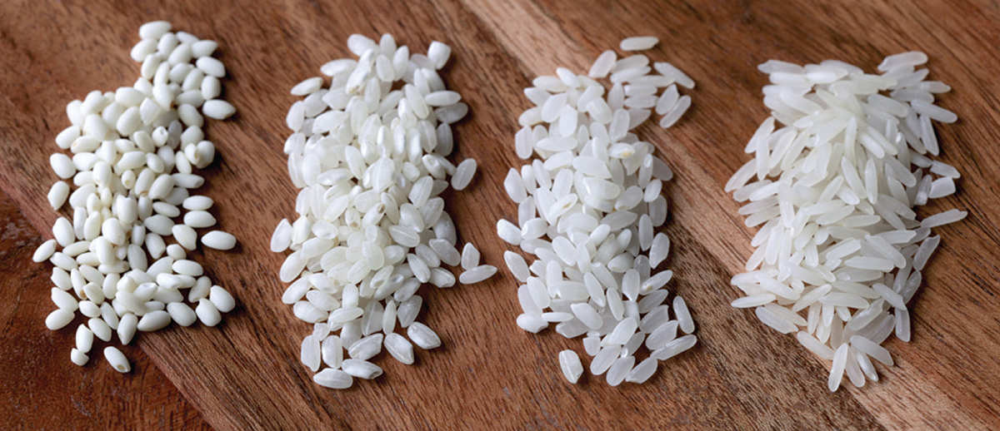

Rice Varieties
There is a huge variety of rice available worldwide, so I’m not even going to attempt to cover them all. These are the ones I see most frequently in American markets and the ones I’m likely to buy.

|
Japonica |
|||
|
TYPE |
DESCRIPTION |
WHERE YOU’D EAT IT |
POPULAR BRANDS |
Calrose |
A medium-grain rice grown in California that has won multiple awards from various international rice organizations, including “World’s Best Rice” from the World Rice Conference |
As a side for Chinese stir-fries. It’s what you’d get at the local Chinese restaurant |
Nishiki, Kokuho Rose, and Botan |
Koshihikari |
A short-grain rice from Japan that is stickier than Calrose |
Formed into sushi or served at a Japanese restaurant. This is my go-to variety, even when I serve it with stir-fries. |
Tamaki Gold, Kagayaki, and Sekka |
Arborio |
A short-grain Italian rice |
It’s the primary rice used in risotto, though Carnaroli and Vialone Nano are also excellent for risotto. |
Riceselect is widely available in the United States, but I typically look for Italian brands at import stores. |
Bomba |
A short-grain Spanish rice |
It’s what gives traditional Spanish paella its creamy, risotto-like texture. |
Look for any imported brand with the “D.O.P. Calasparra” designation on the packaging. |
|
Indica |
|||
TYPE |
DESCRIPTION |
WHERE YOU’D EAT IT |
POPULAR BRANDS |
Basmati |
A very long-grained, fragrant rice with distinct, fluffy grains. Basmati rice is typically aged for a year or more to help it develop its unique flavor. |
Indian, Pakistani, and Middle Eastern restaurants |
Daawat, Royal, and Tilda |
Jasmine |
A highly fragrant, floral rice with medium-long grains native to Thailand, where it’s known as Hom Mali rice |
It’s the rice of choice in Thai restaurants and some Chinese restaurants. |
Asian Best (“Red Elephant”) and Dynasty |
Black Rice |
Also known as “forbidden rice,” it’s a whole-grain rice with a deep black outer bran layer left intact. Once cooked, it turns purplish. |
In some Chinese restaurants |
Lotus and Lundberg |
American Long-Grain |
A long-grain rice that cooks into individual grains with a mild flavor and aroma. |
In the American South or at the school cafeteria |
Carolina, Lundberg, and Canilla |